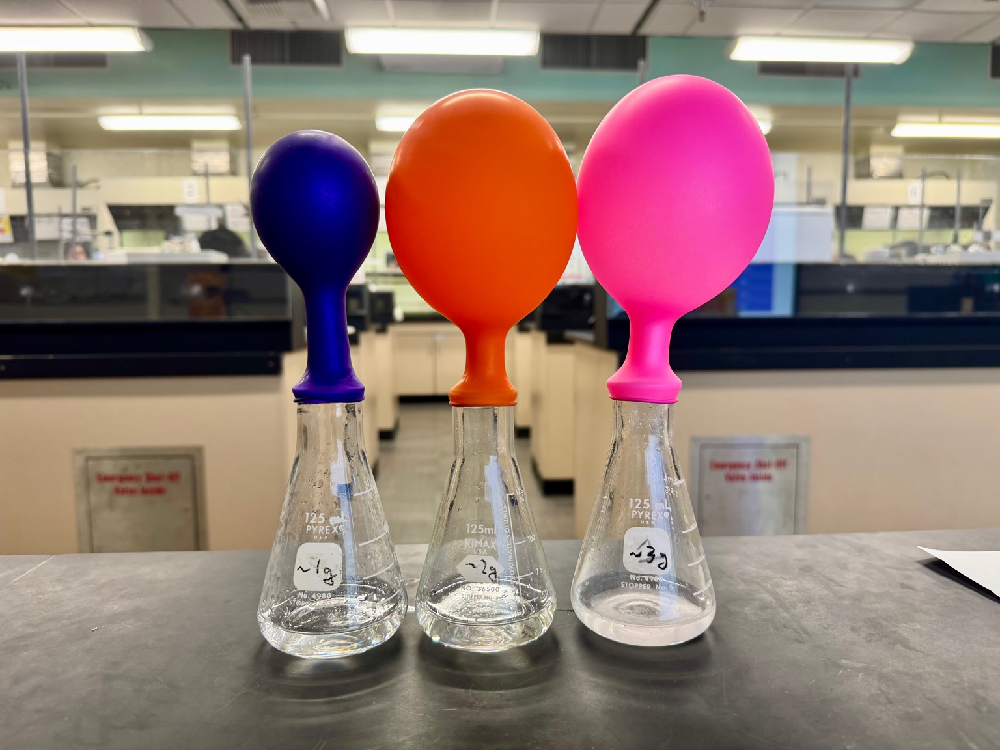
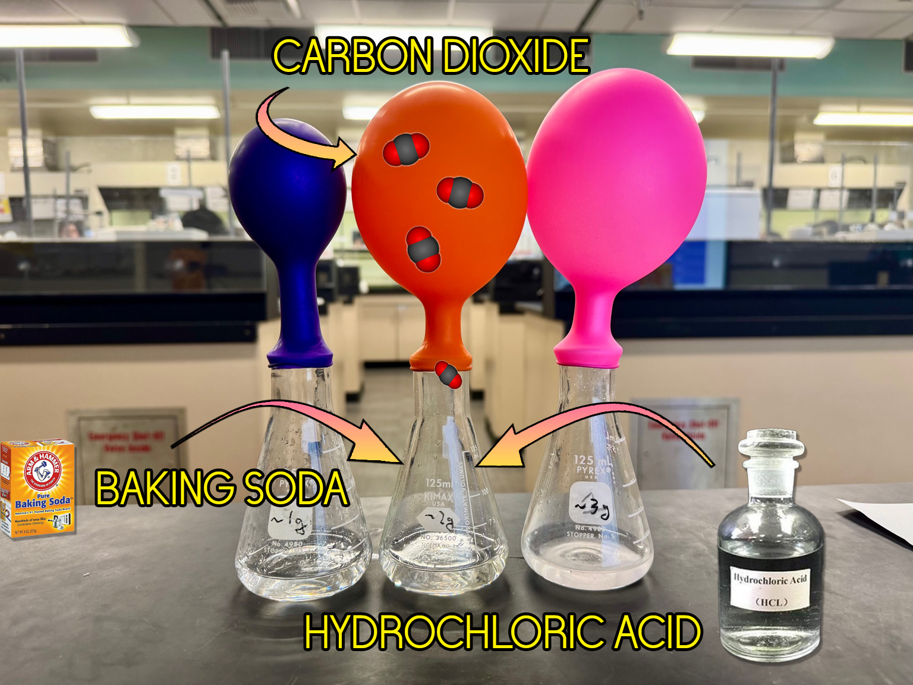
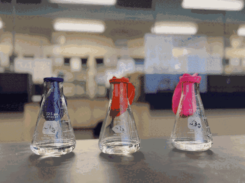

CHEM V101 Lecture Demonstration — Limiting Reactant Visualization
From Year 3
Overview
This short in-class demonstration was used to visualize the concept of limiting reactants during the Stoichiometry and Gas Laws lecture. Students often find the limiting reagent abstract when discussed purely as a calculation problem; this visual setup allowed them to observe how gas production stops once one reactant is consumed, even when the other remains in excess.
Three 125 mL Erlenmeyer flasks were prepared with equal amounts of 1 M HCl (20 mL each) and varying masses of NaHCO₃ (1 g, 2 g, and 3 g). Balloons were fitted on top of each flask to collect the CO₂ gas produced. The different balloon sizes showed the reaction yield, which is set by whichever reactant runs out first (the limiting reactant).
Teaching purpose
While the reaction proceeded, students predicted which reactant would limit CO₂ formation, performed mole-ratio calculations, and compared their theoretical results with the observed balloon volumes. The demonstration was built around three ideas:
- The limiting reactant determines the theoretical yield.
- Adding excess of the other reactant does not increase product formation once the limit is reached.
- Stoichiometric reasoning can be directly connected to visual and quantitative data.



Procedure and result
Each flask contained 20 mL of 1 M HCl solution, while the baking soda (NaHCO₃) was measured and placed inside the balloon before attaching it to the flask. When the balloon was lifted, the powder fell into the acid, immediately generating bubbles of CO₂ gas that inflated the balloon.
In the first two samples, increasing the mass of NaHCO₃ caused visibly larger balloons, and students could see that more reactant produced more gas. However, by the third flask (~3 g NaHCO₃), the balloon was no bigger than the second in any way you could see. More solid was present, but the reaction stopped once all available HCl had been consumed. This identified the acid as the limiting reactant.
Past a certain point, adding more of one substance no longer increases the yield, because the other reactant is completely used up.
Reaction and stoichiometry
NaHCO₃ + HCl → NaCl + H₂O + CO₂ — 1 mol NaHCO₃ → 1 mol CO₂
| Sample | NaHCO₃ (g) | mol NaHCO₃ | mol HCl | Limiting reagent | mol CO₂ | Volume CO₂ @ STP (22.4 L mol⁻¹) |
|---|---|---|---|---|---|---|
| #1 | 1.00 | 0.0119 | 0.020 | NaHCO₃ | 0.0119 | 0.0119 × 22.4 = 0.267 L (267 mL) |
| #2 | 2.00 | 0.0238 | 0.020 | HCl | 0.0200 | 0.0200 × 22.4 = 0.448 L (448 mL) |
| #3 | 3.00 | 0.0357 | 0.020 | HCl | 0.0200 | 0.0200 × 22.4 = 0.448 L (448 mL) |
Conclusions
It ran on October 9, 2025, in a class Joe Selzler was observing. Two weeks earlier the written feedback from Jeffrey Wood's observation had recommended bringing live demonstrations into lecture, and Joe had suggested the same in conversation and lent me his books of demonstrations. His written record of the October 9 class notes the demonstration as a strength and asks that the discussion afterward run longer. My own read was less generous.
The preparation happened before class and took longer than the demonstration itself did, and stopping to run it broke the flow of a lecture built around slides I annotate as I go. The balloons were also a coarse instrument for the thing I most needed them to show: the difference between the second flask and the third is the lesson, and it is the difference two inflated balloons show least well. What did read clearly from across the room was the part students already expected — more baking soda, more gas. That cause and effect was so obvious that it drew attention away from the mechanism underneath it. By the end of it I thought that running this in every section, every term, might be more than it gives back.
It also made me settle how I divide lab and lecture. In my courses chemical demonstrations belong to lab, where the bench, the preparation time, and students standing close enough to watch are all part of the room, and in lecture I want the time to go to the lecture content.
I still wanted to show more in lecture, and I kept asking how. What I arrived at was a simulation. It appears in the minute the calculation is happening, costs nothing to set up, and can run in every section and every term. The limiting reactant is one of the pieces in it, the same idea as these three flasks with the balloons replaced by two bars that drain at the rate the coefficients set and stop when one of them reaches the floor. It is documented in CHEM V101 Interactive Simulations.